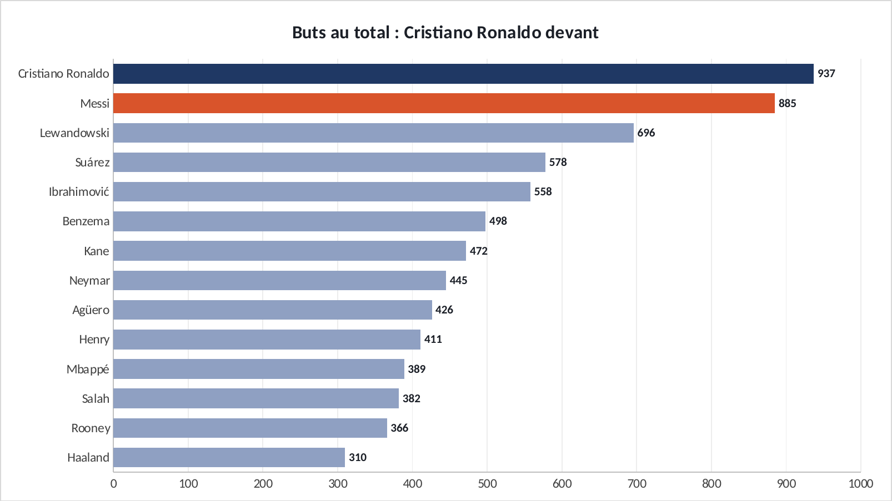
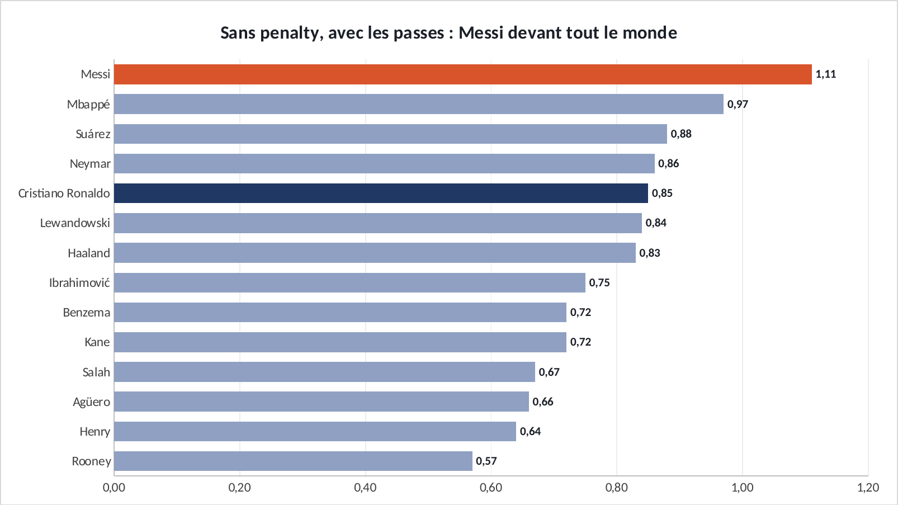
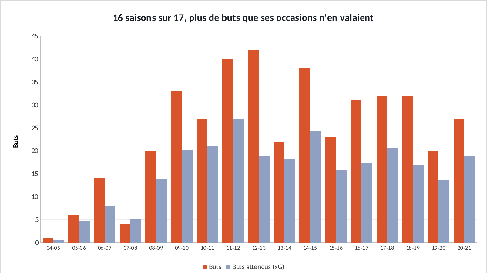
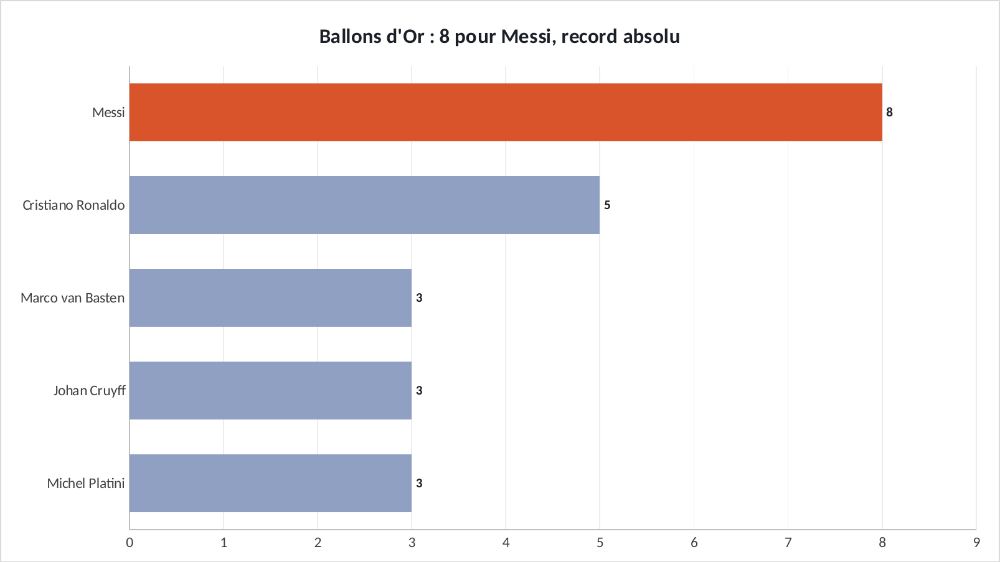

Étude · Football × analyse de performance
Messi est-il le meilleur joueur de l'histoire ?
Huit Ballons d'Or, un record. Mais un trophée reste un vote. J'ai voulu vérifier avec les données : je compare Messi à 13 des plus grands attaquants de son époque, puis j'analyse chacun de ses tirs en Liga pour voir s'il marque plus que ses occasions ne le laissent prévoir.
En 30 secondes
- En buts bruts, Cristiano Ronaldo est devant : 937 contre 885. Mais Ronaldo a marqué 155 penalties en club, Messi 87.
- Sans les penalties et avec les passes décisives, Messi apporte 1,11 but ou passe par match, contre 0,85 pour Ronaldo. Aucun des 14 attaquants ne fait mieux.
- En Liga, il a marqué 412 buts pour 266 attendus (hors penalty) : 16 saisons sur 17 au-dessus de ses occasions. Ce n'est pas de la chance, c'est un talent qui se répète.
01 · Les butsLe total donne l'avantage à Ronaldo

Source : Transfermarkt, jeu de données de salimt (octobre 2025) · club toutes compétitions + sélection A
Si l'on s'arrête au nombre de buts, le débat est vite tranché : Cristiano Ronaldo est devant. Mais ce chiffre mélange des choses très différentes. Il compte les penalties, il récompense la longévité, et il ignore tout ce qu'un joueur fait pour faire marquer les autres. Pour comparer des joueurs, il faut d'abord rendre les chiffres comparables.
02 · La correctionSans les penalties, avec les passes : Messi devant tout le monde

Source : Transfermarkt · club toutes compétitions · (buts hors penalty + passes décisives) ÷ matchs joués
Trois corrections suffisent. On retire les penalties, qui dépendent surtout de qui est désigné tireur. On ajoute les passes décisives, parce qu'un but offert compte autant qu'un but marqué pour l'équipe. Et on divise par le nombre de matchs, pour ne pas récompenser seulement la durée de carrière.
Résultat : Messi apporte 1,11 but ou passe décisive par match. Mbappé suit avec 0,97, Ronaldo est à 0,85. Messi a aussi donné 368 passes décisives en club, 111 de plus que Ronaldo. Et il compte 10 saisons à plus de 40 buts, dont une à 73 buts (2011-12), le record de l'échantillon.
03 · La finitionIl marque plus que ses occasions ne le permettent

Source : StatsBomb, données ouvertes · Liga 2004-05 à 2020-21 · hors penalty
Les buts attendus (xG) donnent la probabilité qu'un tir finisse au fond, selon sa position, l'angle ou la partie du corps utilisée. Un joueur moyen marque à peu près autant que ses xG. Messi a marqué 412 buts pour 266 attendus, soit 146 de plus, et cela 16 saisons sur 17.
Sur les 26 joueurs qui ont tiré au moins 100 fois dans ces matchs, c'est le plus grand écart, loin devant le deuxième, Luis Suárez (+28). L'écart vient surtout des tirs de loin : hors de la surface, Messi a converti 9,3 % de ses tentatives, contre 3,6 % pour les autres joueurs de ces mêmes matchs.
04 · Les Ballons d'OrUne reconnaissance qui suit les chiffres

Source : France Football, liste des lauréats publiée par Sports Illustrated
Messi a gagné le Ballon d'Or en 2009, 2010, 2011, 2012, 2015, 2019, 2021 et 2023. Les quatre premiers correspondent à ses saisons les plus prolifiques, dont les 73 buts de 2011-12. Le dernier suit la Coupe du monde 2022, gagnée avec l'Argentine, où il est élu meilleur joueur du tournoi. Les données ne votent pas, mais elles montrent que ces trophées récompensent une domination mesurable, sur la durée.
05 · Et alors ?Ce que ça m'apprend sur l'analyse de performance
06 · LimitesCe que cette étude ne dit pas
SourcesD'où viennent les chiffres
- salimt/football-datasets : données Transfermarkt, mises à jour en octobre 2025
- StatsBomb, données ouvertes et la publication de la carrière de Messi en Liga
- Sports Illustrated, liste des Ballons d'Or
- Pour aller plus loin : KU Leuven, « Messi vs all » et StatsBomb, analyse 2012-13 à 2015-16